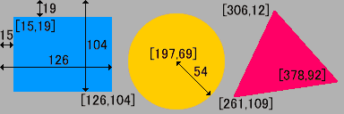

map
<map>タグは、イメージマップを作成する際に使用します。 イメージマップとは、画像や外部リソースの特定領域に、四角形・円形・多角形などの形状でリンクを設定したものです。 一般的には、一枚の画像に複数のリンクを設定する場合などによく利用されています。
イメージマップを作成するには、 <map>～</map>の中に、子要素として<area>を配置します。 <area>のhref属性でリンク先URLを、shape属性でリンク領域の形状を、coords属性でリンク領域の座標を指定します。
<map>のname属性は、イメージマップに名前を付けるための必須属性です。 <map>のname属性の値と、<img>や<object>のusemap属性の値を一致させることで、 イメージマップと画像や外部リソースを関連付けます。 <map>のname属性の値には、スペース文字を含めてはいけません。
●HTML4.01からHTML5へのバージョンアップによる変更点
HTML5では、map要素にid属性を指定する場合には、 name属性と同じ値を指定しなくてはならないとされています。
<img src="images/area.gif" usemap="#sample" alt="サンプル" width="384" height="128"> <map name="sample"> <area href="aaa.htm" shape="rect" alt="四角形" coords="15,19,126,104"> <area href="bbb.htm" shape="circle" alt="円形" coords="197,69,54"> <area href="ccc.htm" shape="poly" alt="多角形" coords="306,12,261,109,378,92"> </map>
ブラウザ表示↓↓
